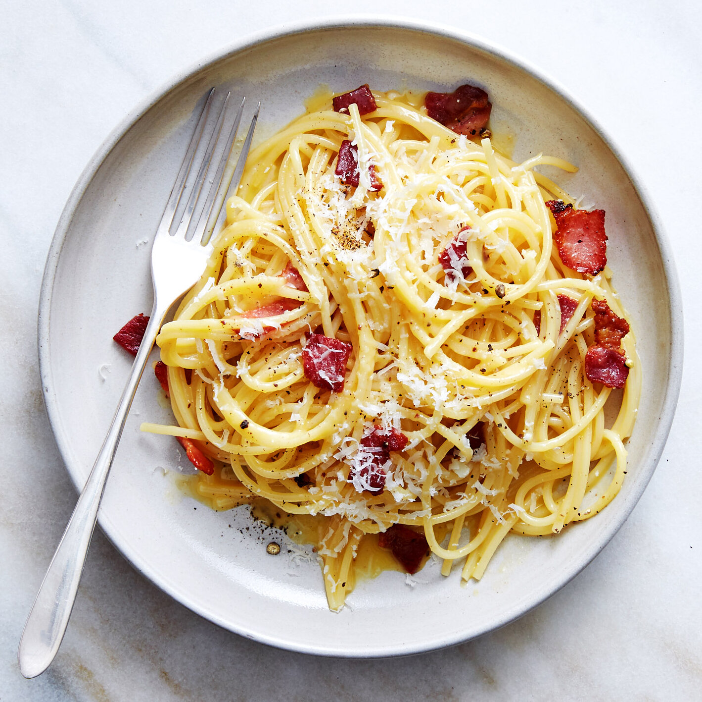

In a small bowl, whisk together the egg yolks, the whole egg, and the grated Pecorino Romano. Add a generous amount of black pepper until the mixture looks like a thick, gritty paste.
Place the diced guanciale in a large pan over medium heat. Fry until the fat has rendered out and the meat is golden and crispy. Turn off the heat once it's done—this is critical for the next steps.
Cook your pasta in salted water until it is al dente (usually 1–2 minutes less than the package instructions). Crucial Step: Reserve about a cup of the starchy pasta water before draining.
Plate immediately with an extra sprinkle of Pecorino and black pepper.